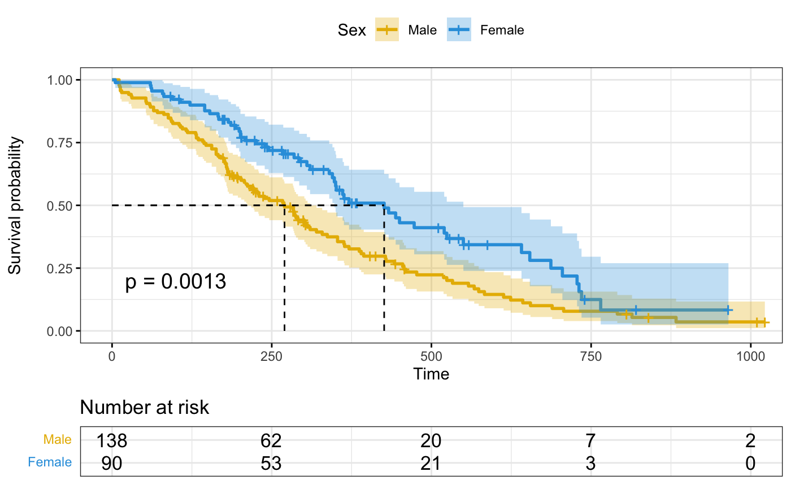

ggsurvplot() is a generic function to plot survival curves. Wrapper
around the ggsurvplot_xx() family functions. Plot one or a list of
survfit objects as generated by the
survfit.formula() and surv_fit functions:
See the documentation for each function to
learn how to control that aspect of the ggsurvplot().
ggsurvplot() accepts further arguments to be passed to the
ggsurvplot_xx() functions. Has options to:
plot a list of survfit objects,
facet survival curves into multiple panels,
group dataset by one or two grouping variables and to create the survival curves in each subset,
combine multiple
survfitobjects into one plot,add survival curves of the pooled patients (null model) onto the main stratified plot,
plot survival curves from a data frame containing survival curve summary as returned by surv_summary().
ggsurvplot( fit, data = NULL, fun = NULL, color = NULL, palette = NULL, linetype = 1, conf.int = FALSE, pval = FALSE, pval.method = FALSE, test.for.trend = FALSE, surv.median.line = "none", risk.table = FALSE, cumevents = FALSE, cumcensor = FALSE, tables.height = 0.25, group.by = NULL, facet.by = NULL, add.all = FALSE, combine = FALSE, ggtheme = theme_survminer(), tables.theme = ggtheme, ... ) # S3 method for ggsurvplot print( x, surv.plot.height = NULL, risk.table.height = NULL, ncensor.plot.height = NULL, newpage = TRUE, ... )
Arguments
| fit | allowed values include:
|
|---|---|
| data | a dataset used to fit survival curves. If not supplied then data will be extracted from 'fit' object. |
| fun | an arbitrary function defining a transformation of the survival curve. Often used transformations can be specified with a character argument: "event" plots cumulative events (f(y) = 1-y), "cumhaz" plots the cumulative hazard function (f(y) = -log(y)), and "pct" for survival probability in percentage. |
| color | color to be used for the survival curves.
|
| palette | the color palette to be used. Allowed values include "hue" for the default hue color scale; "grey" for grey color palettes; brewer palettes e.g. "RdBu", "Blues", ...; or custom color palette e.g. c("blue", "red"); and scientific journal palettes from ggsci R package, e.g.: "npg", "aaas", "lancet", "jco", "ucscgb", "uchicago", "simpsons" and "rickandmorty". See details section for more information. Can be also a numeric vector of length(groups); in this case a basic color palette is created using the function palette. |
| linetype | line types. Allowed values includes i) "strata" for changing linetypes by strata (i.e. groups); ii) a numeric vector (e.g., c(1, 2)) or a character vector c("solid", "dashed"). |
| conf.int | logical value. If TRUE, plots confidence interval. |
| pval | logical value, a numeric or a string. If logical and TRUE, the p-value is added on the plot. If numeric, than the computet p-value is substituted with the one passed with this parameter. If character, then the customized string appears on the plot. See examples - Example 3. |
| pval.method | whether to add a text with the test name used for
calculating the pvalue, that corresponds to survival curves' comparison -
used only when |
| test.for.trend | logical value. Default is FALSE. If TRUE, returns the test for trend p-values. Tests for trend are designed to detect ordered differences in survival curves. That is, for at least one group. The test for trend can be only performed when the number of groups is > 2. |
| surv.median.line | character vector for drawing a horizontal/vertical line at median survival. Allowed values include one of c("none", "hv", "h", "v"). v: vertical, h:horizontal. |
| risk.table | Allowed values include:
|
| cumevents | logical value specifying whether to show or not the table of the cumulative number of events. Default is FALSE. |
| cumcensor | logical value specifying whether to show or not the table of the cumulative number of censoring. Default is FALSE. |
| tables.height | numeric value (in [0 - 1]) specifying the general height of all tables under the main survival plot. |
| group.by | a character vector containing the name of grouping variables. Should be of length <= 2.
Alias of the |
| facet.by | a character vector containing the name of grouping variables
to facet the survival curves into multiple panels. Should be of length <= 2.
Alias of the |
| add.all | a logical value. If TRUE, add the survival curve of pooled patients (null model) onto the main plot.
Alias of the |
| combine | a logical value. If TRUE, combine a list survfit objects on the same plot.
Alias of the |
| ggtheme | function, ggplot2 theme name. Default value is
theme_survminer. Allowed values include ggplot2 official themes: see
|
| tables.theme | function, ggplot2 theme name. Default value is
theme_survminer. Allowed values include ggplot2 official themes: see
|
| ... | Futher arguments as described hereafter and other arguments to be passed i) to ggplot2 geom_*() functions such as linetype, size, ii) or to the function ggpar() for customizing the plots. See details section. |
| x | an object of class ggsurvplot |
| surv.plot.height | the height of the survival plot on the grid. Default is 0.75. Ignored when risk.table = FALSE. |
| risk.table.height | the height of the risk table on the grid. Increase the value when you have many strata. Default is 0.25. Ignored when risk.table = FALSE. |
| ncensor.plot.height | The height of the censor plot. Used when
|
| newpage | open a new page. See |
Value
return an object of class ggsurvplot which is list containing the following components:
plot: the survival plot (ggplot object)
table: the number of subjects at risk table per time (ggplot object).
cumevents: the cumulative number of events table (ggplot object).
ncensor.plot: the number of censoring (ggplot object).
data.survplot: the data used to plot the survival curves (data.frame).
data.survtable: the data used to plot the tables under the main survival curves (data.frame).
Details
Color palettes: The argument palette can be used to specify the color to be used for each group. By default, the first color in the palette is used to color the first level of the factor variable. This default behavior can be changed by assigning correctly a named vector. That is, the names of colors should match the strata names as generated by the
ggsurvplot()function in the legend.
FURTHER ARGUMENTS
Customize survival plots and tables. See also ggsurvplot_arguments.
Plot title and axis labels
title: main title.
xlab, ylab: x and y axis labels, respectively.
Legend title, labels and position
legend: character specifying legend position. Allowed values are one of c("top", "bottom", "left", "right", "none"). Default is "top" side position. to remove the legend use legend = "none". Legend position can be also specified using a numeric vector c(x, y). In this case it is possible to position the legend inside the plotting area. x and y are the coordinates of the legend box. Their values should be between 0 and 1. c(0,0) corresponds to the "bottom left" and c(1,1) corresponds to the "top right" position. For instance use legend = c(0.8, 0.2).
legend.title: legend title.
legend.labs: character vector specifying legend labels. Used to replace the names of the strata from the fit. Should be given in the same order as those strata.
Axis limits, breaks and scales
break.time.by: numeric value controlling time axis breaks. Default value is NULL.
break.x.by: alias of break.time.by. Numeric value controlling x axis breaks. Default value is NULL.
break.y.by: same as break.x.by but for y axis.
surv.scale: scale transformation of survival curves. Allowed values are "default" or "percent".
xscale: numeric or character value specifying x-axis scale.
If numeric, the value is used to divide the labels on the x axis. For example, a value of 365.25 will give labels in years instead of the original days.
If character, allowed options include one of - "d_m", "d_y", "m_d", "m_y", "y_d" and "y_m" - where
d = days,m = monthsandy = years. For example,xscale = "d_m"will transform labels from days to months;xscale = "m_y", will transform labels from months to years.
xlim,ylim: x and y axis limits e.g. xlim = c(0, 1000), ylim = c(0, 1).
axes.offset: logical value. Default is TRUE. If FALSE, set the plot axes to start at the origin.
Confidence interval
conf.int.fill: fill color to be used for confidence interval.
conf.int.style: confidence interval style. Allowed values include c("ribbon", "step").
conf.int.alpha: numeric value specifying confidence fill color transparency. Value should be in [0, 1], where 0 is full transparency and 1 is no transparency.
P-value
pval.size: numeric value specifying the p-value text size. Default is 5.
pval.coord: numeric vector, of length 2, specifying the x and y coordinates of the p-value. Default values are NULL.
pval.method.size: the same as
pval.sizebut for displayinglog.rank.weightsname.pval.method.coord: the same as
pval.coordbut for displayinglog.rank.weightsname.log.rank.weights: the name for the type of weights to be used in computing the p-value for log-rank test. By default
survdiffis used to calculate regular log-rank test (with weights == 1). A user can specify"1", "n", "sqrtN", "S1", "S2", "FH"to use weights specified in comp, so that weight correspond to the test as : 1 - log-rank, n - Gehan-Breslow (generalized Wilcoxon), sqrtN - Tarone-Ware, S1 - Peto-Peto's modified survival estimate, S2 - modified Peto-Peto (by Andersen), FH - Fleming-Harrington(p=1, q=1).
Median survival
surv.median.line: character vector for drawing a horizontal/vertical line at median survival. Allowed values include one of c("none", "hv", "h", "v"). v: vertical, h:horizontal.
Censor points
censor: logical value. If TRUE (default), censors will be drawn.
censor.shape: character or numeric value specifying the point shape of censors. Default value is "+" (3), a sensible choice is "|" (124).
censor.size: numveric value specifying the point size of censors. Default is 4.5.
Survival tables
General parameters for all tables. The arguments below, when specified, will be applied to all survival tables at once (risk, cumulative events and cumulative censoring tables).
tables.col: color to be used for all tables under the main plot. Default value is "black". If you want to color by strata (i.e. groups), use tables.col = "strata".
fontsize: font size to be used for the risk table and the cumulative events table.
font.family: character vector specifying text element font family, e.g.: font.family = "Courier New".
tables.y.text: logical. Default is TRUE. If FALSE, the y axis tick labels of tables will be hidden.
tables.y.text.col: logical. Default value is FALSE. If TRUE, the y tick labels of tables will be colored by strata.
tables.height: numeric value (in [0 - 1]) specifying the general height of all tables under the main survival plot. Increase the value when you have many strata. Default is 0.25.
Specific to the risk table
risk.table.title: the title to be used for the risk table.
risk.table.pos: character vector specifying the risk table position. Allowed options are one of c("out", "in") indicating 'outside' or 'inside' the main plot, respectively. Default value is "out".
risk.table.col,risk.table.fontsize,risk.table.y.text,risk.table.y.text.colandrisk.table.height: same as for the general parameters but applied to the risk table only.
Specific to the number of cumulative events table (cumevents)
cumevents.title: the title to be used for the cumulative events table.
cumevents.col, cumevents.y.text, cumevents.y.text, cumevents.height: same as for the general parameters but for the cumevents table only.
Specific to the number of cumulative censoring table (cumcensor)
cumcensor.title: the title to be used for the cumcensor table.
cumcensor.col,cumcensor.y.text,cumcensor.y.text.col,cumcensor.height: same as for the general parameters but for cumcensor table only.
Survival plot height
surv.plot.height: the height of the survival plot on the grid. Default is 0.75. Ignored when risk.table = FALSE.
Number of censored subjects barplot
ncensor.plot: logical value. If TRUE, the number of censored subjects at time t is plotted. Default is FALSE. Ignored when cumcensor = TRUE.
ncensor.plot.title: the title to be used for the censor plot. Used when
ncensor.plot = TRUE.ncensor.plot.height: the height of the censor plot. Used when
ncensor.plot = TRUE.
Other graphical parameters
The plot can be easily customized using additional arguments to be
passed to the function ggpar().
These arguments include
font.title, font.subtitle, font.caption, font.x, font.y, font.tickslab and font.legend,
which are vectors of length 3 indicating respectively the size
(e.g.: 14), the style (e.g.: "plain", "bold", "italic", "bold.italic") and
the color (e.g.: "red") of main title, subtitle, caption, xlab and ylab,
axis tick labels and legend, respectively. For example font.x = c(14,
"bold", "red").
Use font.x = 14, to change only font size; or use font.x = "bold", to change only font face.
Examples
#%%%%%%%%%%%%%%%%%%%%%%%%%%%%%%%%%%%%% # Example 1: Survival curves with two groups #%%%%%%%%%%%%%%%%%%%%%%%%%%%%%%%%%%%%% # Fit survival curves #++++++++++++++++++++++++++++++++++++ require("survival") fit<- survfit(Surv(time, status) ~ sex, data = lung) # Basic survival curves ggsurvplot(fit, data = lung)# Customized survival curves ggsurvplot(fit, data = lung, surv.median.line = "hv", # Add medians survival # Change legends: title & labels legend.title = "Sex", legend.labs = c("Male", "Female"), # Add p-value and tervals pval = TRUE, conf.int = TRUE, # Add risk table risk.table = TRUE, tables.height = 0.2, tables.theme = theme_cleantable(), # Color palettes. Use custom color: c("#E7B800", "#2E9FDF"), # or brewer color (e.g.: "Dark2"), or ggsci color (e.g.: "jco") palette = c("#E7B800", "#2E9FDF"), ggtheme = theme_bw() # Change ggplot2 theme )# Change font size, style and color #++++++++++++++++++++++++++++++++++++ if (FALSE) { # Change font size, style and color at the same time ggsurvplot(fit, data = lung, main = "Survival curve", font.main = c(16, "bold", "darkblue"), font.x = c(14, "bold.italic", "red"), font.y = c(14, "bold.italic", "darkred"), font.tickslab = c(12, "plain", "darkgreen")) } #%%%%%%%%%%%%%%%%%%%%%%%%%%%%%%%%%%%%% # Example 2: Facet ggsurvplot() output by # a combination of factors #%%%%%%%%%%%%%%%%%%%%%%%%%%%%%%%%%%%%% # Fit (complexe) survival curves #++++++++++++++++++++++++++++++++++++ if (FALSE) { require("survival") fit3 <- survfit( Surv(time, status) ~ sex + rx + adhere, data = colon ) # Visualize #++++++++++++++++++++++++++++++++++++ ggsurv <- ggsurvplot(fit3, data = colon, fun = "cumhaz", conf.int = TRUE, risk.table = TRUE, risk.table.col="strata", ggtheme = theme_bw()) # Faceting survival curves curv_facet <- ggsurv$plot + facet_grid(rx ~ adhere) curv_facet # Faceting risk tables: # Generate risk table for each facet plot item ggsurv$table + facet_grid(rx ~ adhere, scales = "free")+ theme(legend.position = "none") # Generate risk table for each facet columns tbl_facet <- ggsurv$table + facet_grid(.~ adhere, scales = "free") tbl_facet + theme(legend.position = "none") # Arrange faceted survival curves and risk tables g2 <- ggplotGrob(curv_facet) g3 <- ggplotGrob(tbl_facet) min_ncol <- min(ncol(g2), ncol(g3)) g <- gridExtra::gtable_rbind(g2[, 1:min_ncol], g3[, 1:min_ncol], size="last") g$widths <- grid::unit.pmax(g2$widths, g3$widths) grid::grid.newpage() grid::grid.draw(g) } #%%%%%%%%%%%%%%%%%%%%%%%%%%%%%%%%%%%%% # Example 3: CUSTOMIZED PVALUE #%%%%%%%%%%%%%%%%%%%%%%%%%%%%%%%%%%%%% # Customized p-value ggsurvplot(fit, data = lung, pval = TRUE)ggsurvplot(fit, data = lung, pval = 0.03)ggsurvplot(fit, data = lung, pval = "The hot p-value is: 0.031")